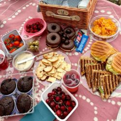
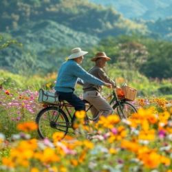
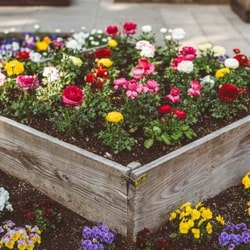
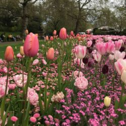
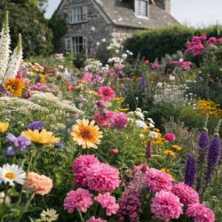
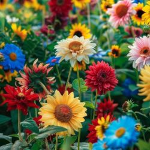
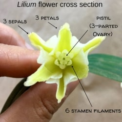
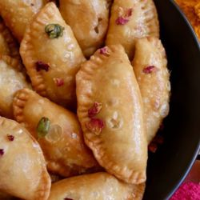
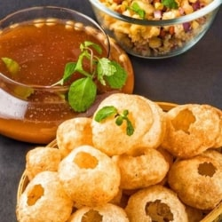
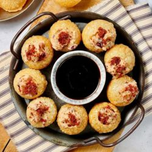

“An optimist is the human personification of spring.”
– Susan J. Bissonette
Spring awakens the world with blooming flowers, gentle breezes, and a sense of renewal, bringing fresh energy and opportunities to embrace the outdoors. This season also includes the festival of colors Holi, Easter and lot of regions in India celebrate their New Year, like Puthandu in Tamilnadu, Vishu in Kerala, etc.
Here we have some ideas on seasonal activities to do and delicious food to enjoy spring to the fullest
Activities to DO
• Have a Picnic •
Spring’s blooming flowers and mild weather make it the perfect season for a picnic. Pack a basket with fresh fruits, sandwiches, and your favorite drinks, and head to a park or garden. Enjoy the vibrant scenery, chirping birds, and gentle breeze as you relax outdoors. It’s a wonderful way to connect with nature and spend quality time with loved ones.
• Ride a bike •
Spring’s pleasant weather and scenic beauty make it an ideal time to ride a bike. Whether you’re cycling through lush parks or along flower-lined trails, it’s a fun and refreshing way to stay active. The gentle breeze and colorful surroundings add to the joy of the ride. It’s a great way to explore nature and embrace the energy of spring.

• Build a small Garden •
Spring is the perfect time to build a small garden and watch nature come to life. Plant colorful flowers, fresh herbs, or even a few vegetables to enjoy the season’s vibrant energy. Gardening is a relaxing activity that adds beauty to your space while connecting you with nature. It’s rewarding to nurture plants and see them thrive in the spring sunshine.


• Visit an Arboretum or Public Garden •
Spring is the ideal season to visit an arboretum or public garden and immerse yourself in nature's beauty. Enjoy the colorful blossoms, lush greenery, and soothing ambiance as you stroll through well-maintained paths. It’s a peaceful way to admire unique plant collections and learn about the wonders of spring. Don’t forget your camera to capture the vibrant scenery!
  
• Observe and Study Flowers •
Spring offers the perfect opportunity to observe and study flowers as they bloom in a riot of colors. Take a closer look at their shapes, patterns, and fragrances to appreciate their unique beauty. You can learn about different species, their habitats, and their role in nature. It’s a delightful way to connect with the season’s vibrant charm while expanding your knowledge.

• Make a Bubble portion and blow the bubbles •
Spring’s gentle breeze makes it a perfect time to have fun with bubbles! Mix a simple bubble potion using soap and water, and enjoy creating shimmering bubbles that float through the air. Blowing bubbles is a joyful activity that brings smiles to kids and adults alike. It’s a playful way to celebrate the season and add a touch of magic to your day.
Food
• Custard and fresh cream fruit cake.
Spring is the perfect season to indulge in a light and refreshing custard and fresh cream fruit cake. Layers of fluffy cake, creamy custard, and a medley of colorful, juicy fruits make for a delightful treat. This dessert captures the essence of spring with its vibrant flavors and cheerful appearance. Serve it at gatherings or enjoy a slice on a sunny day to celebrate the season.
• Gujiya •
Spring festivities, especially around Holi, are incomplete without the delicious treat of Gujiya. These golden, crescent-shaped pastries are filled with a sweet mixture of khoya, nuts, and sometimes coconut. Deep-fried to perfection and lightly coated with sugar syrup, Gujiya embodies the joy and warmth of spring celebrations. Sharing them with family and friends adds sweetness to the season.

• Chaat and Panipuri •
Spring is the perfect time to savor the tangy and spicy flavors of chaat and panipuri. These popular street foods burst with a mix of chutneys, spices, and crunchy textures, offering a refreshing treat in the breezy weather. Whether it’s the crisp puris filled with zesty water or a plate of savory chaat, these snacks are a delightful way to enjoy the lively spirit of spring.
 
• Strawberries coated in chocolate •
Spring’s fresh strawberries paired with rich, melted chocolate make for a heavenly treat. The sweetness of the fruit and the smoothness of the chocolate create a perfect balance of flavors. These bite-sized delights are great for snacking, gifting, or adding elegance to spring gatherings. Simple yet indulgent, they capture the sweetness of the season.